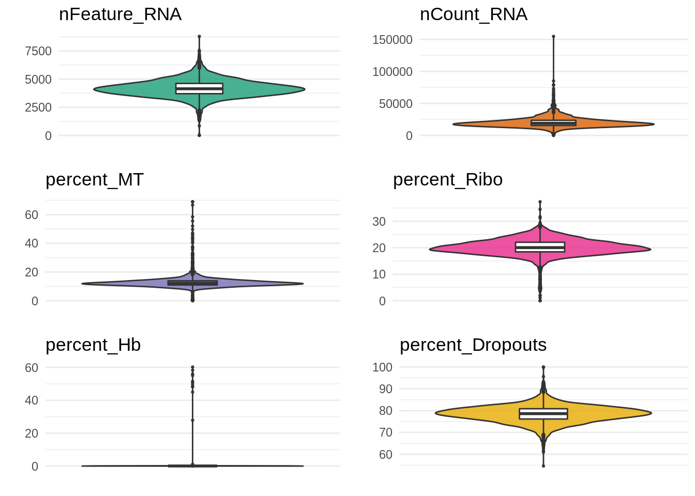
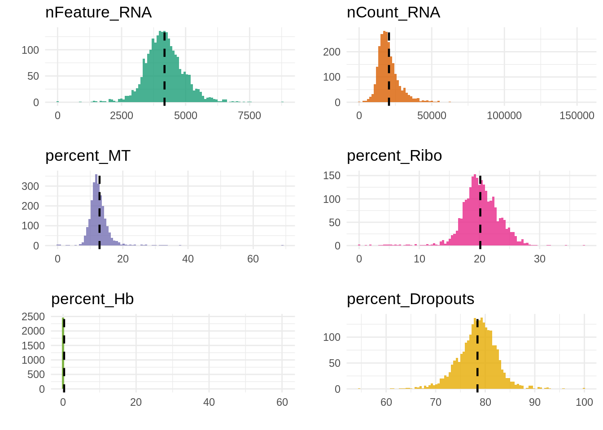
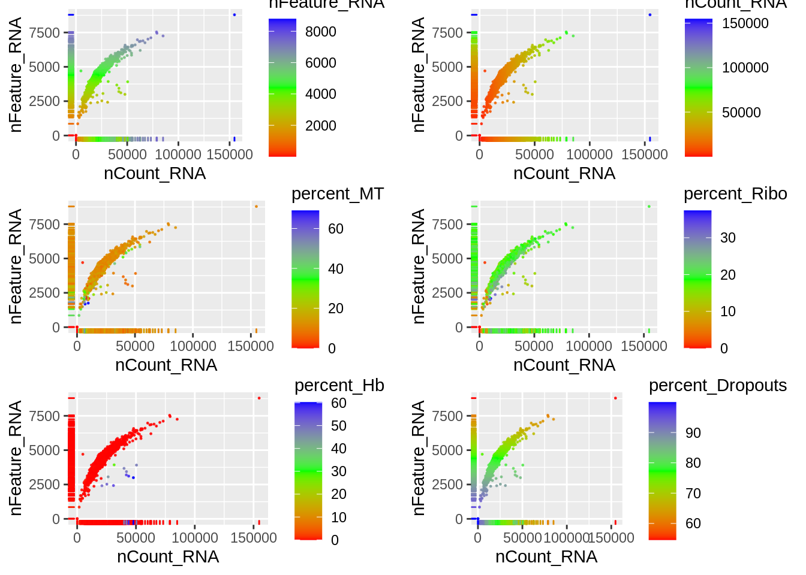
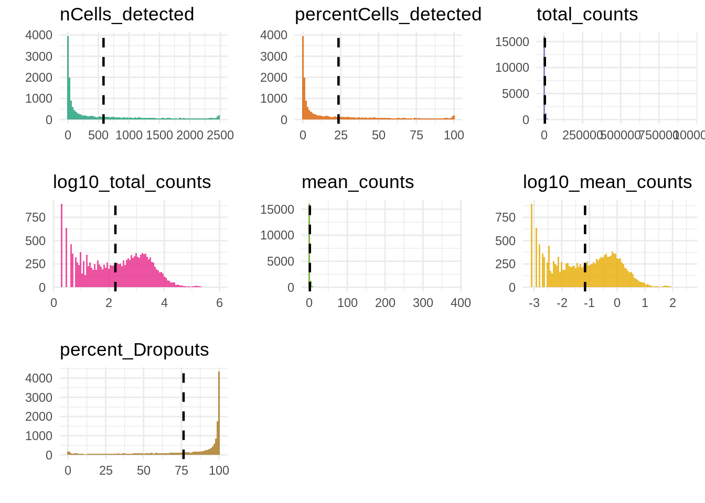
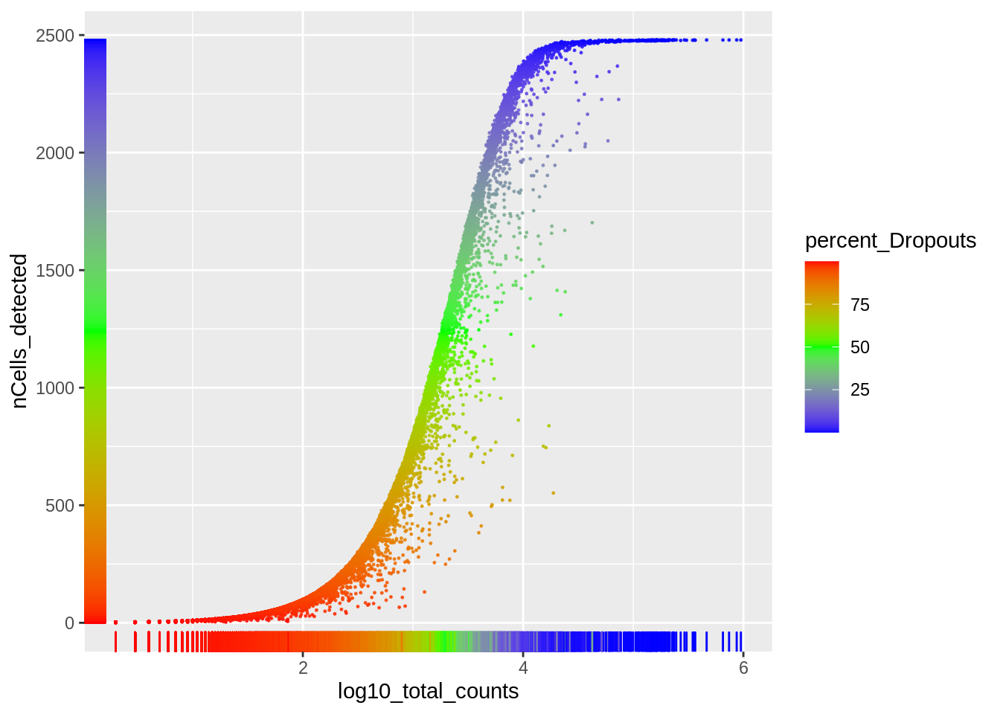
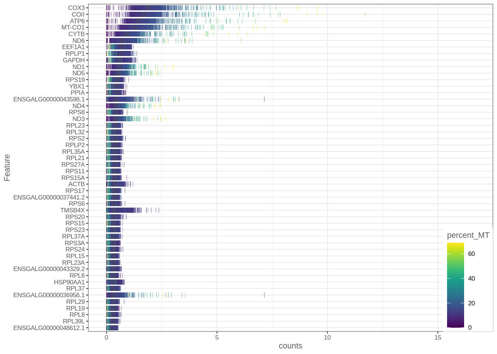

2 Data pre-processing
library(Seurat)
library(dplyr)
library(scater)
library(gridExtra)
library(RColorBrewer)
library(cowplot)
library(viridis)
library(scales)
library(ggthemes)We start by loading the Seurat object stored as a RDS object.
It contains all the single-cell data.
obj_seurat <- readRDS(file = params$rds)
obj_seurat[["orig.ident"]] <- params$gtf
Idents(obj_seurat) <- 'orig.ident'At this step of the pre-processing, the data consists of 2481 cells and 19367 genes. Before going any further, we start by removing the genes that are not detected in our dataset (if any).
obj_counts <- obj_seurat@assays$RNA@counts
features_keep <- rowSums(obj_counts) > 1
obj_seurat <- obj_seurat[features_keep, ]
table(features_keep)## features_keep
## FALSE TRUE
## 1617 17750There are 17750 remaining genes (detected at least twice). We now load a BioMart query table obtained from https://www.ensembl.org/biomart/martview.
biomart <- read.table(file = 'biomart.txt',
header = TRUE,
sep= '\t')2.1 Calculate QC metrics
In the following sections, we calculate the value of standard cell metrics and store it in the Seurat object.
2.1.1 Cells metrics
2.1.1.1 Mitochondrial genes
genes_MT <- biomart %>%
filter(Chromosome.scaffold.name == "MT") %>%
filter(Gene.type == "protein_coding")
features <- genes_MT[genes_MT$Gene.name %in% rownames(obj_seurat),'Gene.name']
if (length(features) != 0) {
obj_seurat[["percent_MT"]] <- PercentageFeatureSet(obj_seurat,
features = features)
print(genes_MT$Gene.name)
} else {
obj_seurat[["percent_MT"]] <- 0
}## [1] "ATP6" "ATP6" "COII" "CYTB" "CYTB" "ATP8" "ATP8" "COX3"
## [9] "ND1" "MT-ND2" "MT-CO1" "ND3" "ND4L" "ND4" "ND5" "ND6"2.1.1.2 Ribosomal genes
obj_seurat[['percent_Ribo']] <- PercentageFeatureSet(obj_seurat,
pattern = "^RP[SL]")2.1.1.3 Blood associated genes
obj_seurat[['percent_Hb']] <- PercentageFeatureSet(obj_seurat,
pattern = "^HB[^(P)]")2.1.1.4 Percent of zeros in each cell
obj_seurat[['percent_Dropouts']] <- colSums(obj_counts == 0) / nrow(obj_counts)*1002.1.2 Features metrics
We now store genes metadata (e.g. number of cells in which the gene is detected, percent of zero counts, etc.) in the Seurat object.
obj_counts <- obj_seurat@assays$RNA@counts
obj_seurat@assays$RNA@meta.features[['nCells_detected']] <- rowSums(obj_counts != 0)
obj_seurat@assays$RNA@meta.features[['percentCells_detected']] <- rowSums(obj_counts != 0) / ncol(obj_counts)*100
obj_seurat@assays$RNA@meta.features[['total_counts']] <- rowSums(obj_counts)
obj_seurat@assays$RNA@meta.features[['log10_total_counts']] <- log10(rowSums(obj_counts))
obj_seurat@assays$RNA@meta.features[['mean_counts']] <- rowMeans(obj_counts)
obj_seurat@assays$RNA@meta.features[['log10_mean_counts']] <- log10(rowMeans(obj_counts))
obj_seurat@assays$RNA@meta.features[['percent_Dropouts']] <- rowSums(obj_counts == 0) / ncol(obj_counts)*1002.2 Plot QC metrics
2.2.1 Cells metrics
2.2.1.1 Violin plots
metrics <- c("nFeature_RNA", "nCount_RNA", "percent_MT",
"percent_Ribo", "percent_Hb", "percent_Dropouts")
obj <- as.data.frame(obj_seurat@meta.data[, metrics])
plots_colors <- brewer.pal(6, "Dark2")
plots <- list()
for (i in seq(1, length(metrics))) {
plots[[i]] <- ggplot(obj, aes_string(x = factor(0), y = metrics[i])) +
geom_violin(fill = plots_colors[i], alpha = 0.8) +
geom_boxplot(width = 0.2, outlier.size = 0.5, outlier.alpha = 0.8) +
labs(x = "", y = "", title = metrics[i]) +
scale_x_discrete(labels = NULL, breaks = NULL) +
theme_minimal()
}
do.call(grid.arrange, plots)
2.2.1.2 Histograms
plots <- list()
for (i in seq(1, length(metrics))) {
print(metrics[i])
print(summary(obj[,metrics[i]]))
mu <- mean(obj[,metrics[i]])
plots[[i]] <- ggplot(obj, aes_string(x = metrics[i])) +
geom_histogram(fill = plots_colors[i], alpha = 0.8, bins = 100) +
labs(x = "", y = "", title = metrics[i]) +
geom_vline(xintercept = mu, color = "black", linetype = "dashed", size = 0.8) +
theme_minimal()
}## [1] "nFeature_RNA"
## Min. 1st Qu. Median Mean 3rd Qu. Max.
## 6 3704 4141 4176 4617 8788
## [1] "nCount_RNA"
## Min. 1st Qu. Median Mean 3rd Qu. Max.
## 6 15506 18929 20568 23574 154755
## [1] "percent_MT"
## Min. 1st Qu. Median Mean 3rd Qu. Max.
## 0.00 10.99 12.21 12.86 13.82 68.97
## [1] "percent_Ribo"
## Min. 1st Qu. Median Mean 3rd Qu. Max.
## 0.00 18.45 20.04 20.14 22.07 37.36
## [1] "percent_Hb"
## Min. 1st Qu. Median Mean 3rd Qu. Max.
## 0.00000 0.03057 0.04210 0.26867 0.05671 60.19746
## [1] "percent_Dropouts"
## Min. 1st Qu. Median Mean 3rd Qu. Max.
## 54.59 76.16 78.62 78.43 80.87 99.97do.call(grid.arrange, plots)
2.2.1.3 nGenes against nCounts
plots <- list()
for (i in seq(1, length(metrics))) {
plots[[i]] <- ggplot(obj, aes_string(x = "nCount_RNA",
y = "nFeature_RNA",
color = metrics[i])) +
geom_point(size = 0.2, alpha = 0.8) +
geom_rug(sides ="bl") +
scale_colour_gradientn(colours = rainbow(3))
}
do.call(grid.arrange, plots)
2.2.2 Genes metrics
2.2.2.1 Violin plots
metrics <- c("nCells_detected", "percentCells_detected", "total_counts", "log10_total_counts",
"mean_counts", "log10_mean_counts", "percent_Dropouts")
obj <- as.data.frame(obj_seurat@assays$RNA@meta.features[, metrics])
plots_colors <- brewer.pal(7, "Dark2")
plots <- list()
for (i in seq(1, length(metrics))) {
plots[[i]] <- ggplot(obj, aes_string(x = factor(0), y = metrics[i])) +
geom_violin(fill = plots_colors[i], alpha = 0.8) +
geom_boxplot(width = 0.2, alpha = 0.3, outlier.size = 0.5, outlier.alpha = 0.8) +
labs(x = "", y = "", title = metrics[i]) +
scale_x_discrete(labels = NULL, breaks = NULL) +
theme_minimal()
}
do.call(grid.arrange, plots)
2.2.2.2 Histograms
plots <- list()
for (i in seq(1, length(metrics))) {
print(metrics[i])
print(summary(obj[,metrics[i]]))
mu <- mean(obj[,metrics[i]])
plots[[i]] <- ggplot(obj, aes_string(x = metrics[i])) +
geom_histogram(fill = plots_colors[i], alpha = 0.8, bins = 100) +
labs(x = "", y = "", title = metrics[i]) +
geom_vline(xintercept = mu, color = "black", linetype = "dashed", size = 0.8) +
theme_minimal()
}## [1] "nCells_detected"
## Min. 1st Qu. Median Mean 3rd Qu. Max.
## 1.0 16.0 186.0 583.7 1005.0 2479.0
## [1] "percentCells_detected"
## Min. 1st Qu. Median Mean 3rd Qu. Max.
## 0.04031 0.64490 7.49698 23.52747 40.50786 99.91939
## [1] "total_counts"
## Min. 1st Qu. Median Mean 3rd Qu. Max.
## 2 17 212 2875 1507 949448
## [1] "log10_total_counts"
## Min. 1st Qu. Median Mean 3rd Qu. Max.
## 0.301 1.230 2.326 2.235 3.178 5.977
## [1] "mean_counts"
## Min. 1st Qu. Median Mean 3rd Qu. Max.
## 0.0008 0.0069 0.0854 1.1588 0.6074 382.6876
## [1] "log10_mean_counts"
## Min. 1st Qu. Median Mean 3rd Qu. Max.
## -3.0936 -2.1642 -1.0683 -1.1596 -0.2165 2.5828
## [1] "percent_Dropouts"
## Min. 1st Qu. Median Mean 3rd Qu. Max.
## 0.08061 59.49214 92.50302 76.47253 99.35510 99.95969do.call(grid.arrange, plots)
2.2.2.3 nCells against nCounts
metrics <- c("percent_Dropouts")
plots <- list()
for (i in seq(1, length(metrics))) {
plots[[i]] <- ggplot(obj, aes_string(x = "log10_total_counts",
y = "nCells_detected",
color = metrics[i])) +
geom_point(size = 0.2, alpha = 0.8) +
geom_rug(sides ="bl") +
scale_colour_gradientn(colours = rev(rainbow(3)))
}
do.call(grid.arrange, plots)
2.2.3 Highly expressed genes
obj_sce <- as.SingleCellExperiment(obj_seurat)
plotHighestExprs(obj_sce,
n = 50,
exprs_values = "counts",
colour_cells_by = "percent_MT",
as_percentage = TRUE)
2.3 Filter data
2.3.1 Cells filtering
2.3.1.1 By number of detected genes
For the sake of simplicity, we keep cells in which we detect at least 1000 genes. We use the same threshold for all the datasets.
md_cells <- as.data.frame(obj_seurat@meta.data)
table(md_cells$nFeature_RNA >= 1000)##
## FALSE TRUE
## 3 2478quantile(md_cells$nFeature_RNA, probs = seq(0, 0.05, 0.01))## 0% 1% 2% 3% 4% 5%
## 6.0 2160.2 2619.8 2804.2 2935.0 3040.0cells_keep <- WhichCells(obj_seurat, expression = nFeature_RNA >= 1000)
obj_filt <- subset(obj_seurat, cells = cells_keep)There are 2478 remaining cells.
2.3.1.2 By mitochondrial genes
We here remove cells that express 20% or more of mitochondrial genes compared to the total number of genes detected in each of them. We chose the 20% threshold due to the distribution observed above.
table(md_cells$percent_MT < 20)##
## FALSE TRUE
## 75 2406quantile(md_cells$percent_MT, probs = seq(0.9, 1, 0.01))## 90% 91% 92% 93% 94% 95% 96% 97%
## 15.70165 15.91113 16.19067 16.64139 17.04488 17.71955 18.47223 20.09899
## 98% 99% 100%
## 23.77213 31.67336 68.96623cells_keep <- WhichCells(obj_filt, expression = percent_MT < 20)
obj_filt <- subset(obj_filt, cells = cells_keep)There are 2404 remaining cells.
2.3.1.3 Remove blood cells
Blood cells are outliers in this dataset, so we need to remove them. For this purpose, we remove cells in which we detect 0.1% or more of blood associated genes (i.e. hemoglobin genes).
table(md_cells$percent_Hb < 0.1)##
## FALSE TRUE
## 70 2411quantile(md_cells$percent_Hb, probs = seq(0.9, 1, 0.01))## 90% 91% 92% 93% 94% 95%
## 0.07375175 0.07567897 0.07803725 0.08010904 0.08222058 0.08593834
## 96% 97% 98% 99% 100%
## 0.09268938 0.09796861 0.11256679 0.15596915 60.19746475cells_keep <- WhichCells(obj_filt, expression = percent_Hb < 0.1)
obj_filt <- subset(obj_filt, cells = cells_keep)There are 2353 remaining cells.
2.3.2 Genes filtering
Finally, we filter the genes that are detected in less than 5 cells.
min_genes <- 1
min_cells <- 5
features_keep <- which(rowSums(obj_counts[rowSums(obj_counts) >= min_genes,] != 0) >= min_cells)
obj_filt <- subset(obj_filt, features = features_keep)Finally, there are 2353 remaining cells and 15680 remaining genes.
saveRDS(obj_seurat,
file = paste0("data/rds/", params$gtf, "_obj_seurat_unfiltered.rds"))
# Save metadata on cells
write.table(obj_seurat[[]],
file = paste0("data/raw/", params$gtf, "_cells_metadata_unfiltered.tsv"),
quote = FALSE,
sep = "\t")
# Save metadata on genes
write.table(obj_seurat@assays$RNA@meta.features,
file = paste0("data/raw/", params$gtf, "_genes_metadata_unfiltered.tsv"),
quote = FALSE,
sep = "\t")obj_seurat <- obj_filt